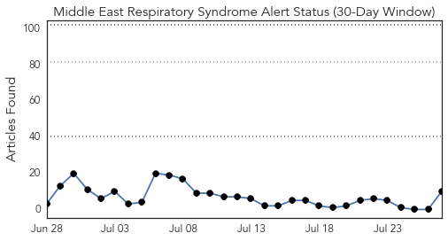
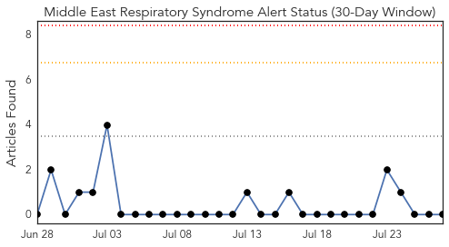
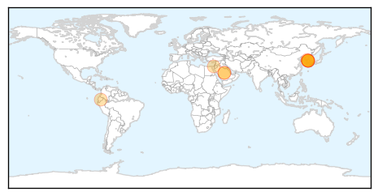
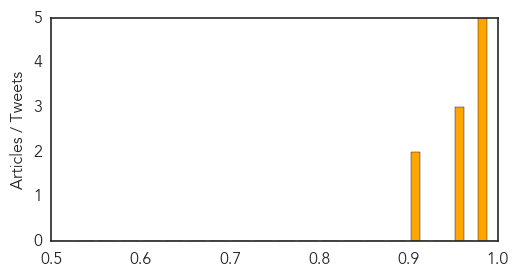

MERS
30-Day Web Trend
0 alerts, 0 warnings

30-Day Twitter Trend
0 alerts, 0 warnings

Article Locations
Article Confidences
Top Articles:
- 1.000
- Mers: What are the symptoms, how does the virus spread – and how contagious is it?
- 0.998
- Two possible MERS cases force hospital in Manchester to close
- 0.998
- Mers virus: What is Middle East Respiratory Syndrome?
- 0.998
- Manchester Royal Infirmary A&E unit closed over Middle Eastern Respiratory Syndrome (MERS-CoV) outbreak
- 0.982
- SOUTH KOREA South Korea removes last person from quarantine over MERS
- 0.971
- MERS Isn't an Epidemic. That Makes It Harder to Find a Cure
- 0.971
- South Korea releases last suspected MERS patient
- 0.964
- News Scan for Jul 27, 2015
- 0.904
- South Korea counts the cost of MERS outbreak
- 0.903
- A cure for Mers? Hong Kong scientists endorse two drugs they say cured marmosets of the virus
Top Tweets:
-
No tweets found for Jul 27, 2015
Hepatitis
30-Day Web Trend
2 alerts, 1 warnings

30-Day Twitter Trend
1 alerts, 0 warnings

Article Locations

Article Confidences

Top Articles:
- 0.998
- Lettuce, livers, berries and other leading sources of food poisoning
- 0.960
- Today, July 28, is World Hepatitis Day
- 0.953
- WARNING: Tennessee releases "Public Health Advisory" on Hepatitis C
- 0.936
- Tennessee: Hepatitis C cases triple prompting health advisory
- 0.912
- Hepatitis cure costs a fortune
- 0.912
- 2015 World Hepatitis Day: Preventing Viral Hepatitis Infections
- 0.856
- Charities to launch hepatitis C testing campaign
- 0.840
- State Health Department warns about Hepatitis C virus
- 0.829
- Opioid tampering by providers who use drugs increases risk for HCV transmission
- 0.752
- Many hepatitis carriers who need treatment not getting it: official
- 0.730
- WHO injection safety drive to help check hepatitis
- 0.710
- Hepatitis, a silent killer, with symptoms appearing late
- 0.707
- On World Hepatitis Day, Millions to Hear Messages of Testing and Treatment, not Stigma
- 0.696
- Free hepatitis-C treatment for poor on cards
- 0.679
- Russia's growing epidemic of chronic hepatitis C
- 0.657
- Should the state disclose which Maine schools face disease outbreaks?
- 0.638
- Tattoo, body piercing can put you at hepatitis risk
- 0.620
- WHO observes World Hepatitis Day with statistics
- 0.615
- More than 3,000 people in Luxembourg with Hepatitis C
- 0.584
- Living with hepatitis: Don’t be afraid
- 0.555
- Herpes and other diseases affecting native mammal population, study finds
- 0.508
- Prevention of viral hepatitis
Top Tweets:
-
No tweets found for Jul 27, 2015